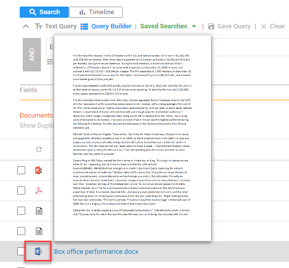
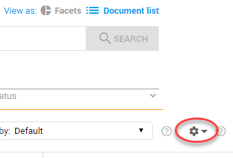
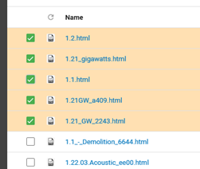
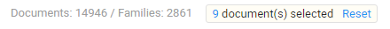

Preview the first page of the document by hovering over the document icon.

Click on a document title to open it in Document View.
Switch back to Facets View .
Perform Keyword Search.
Perform List Actions: (de)select columns, select a list option, save/share a view, perform bulk tagging, create/view review batches, create/view batch downloads, create/view productions, export to CSV to create reports, enable connected tabs/windows, and delete selection/documents/families.

Bulk select multiple contiguous items from the list: Select an item, press the Shift button and select another item from the list (Shift+Click). The selected items and all items in between will be selected. Add/remove individual items to/from this group by selecting them.

Click Reset to deselect all items:

Change the total number of documents listed on a single list page with Page Size in the bottom right corner: